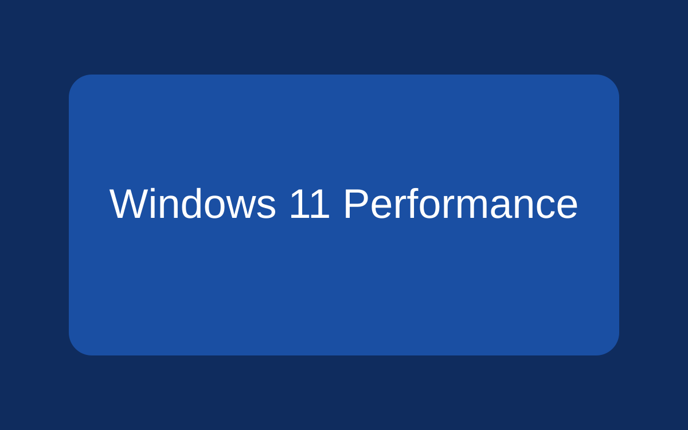

10 Ways to Speed Up Windows 11

Windows 11 can feel sluggish on older hardware or after months of accumulated software installs. These ten tested tweaks — all performed within Windows itself, no third-party tools required — address the most common causes of slowdown and can recover significant system responsiveness in under 30 minutes.
1. Disable Unnecessary Startup Programs
Many applications register themselves to launch at Windows startup, consuming CPU and memory before you have even opened a browser. To review and disable them:
- Press Ctrl + Shift + Esc to open Task Manager.
- Select the Startup apps tab.
- Right-click any high-impact item you do not need at login and choose Disable.
Focus on items marked High startup impact. Disable only apps you recognise.
2. Adjust Visual Effects for Performance
Windows 11 enables animations and transparency by default. Reducing these frees GPU resources on older machines:
- Open Settings → System → About → Advanced system settings.
- Under Performance, click Settings…
- Choose Adjust for best performance, or manually uncheck animations you can live without.
3. Enable Storage Sense
Low disk space — especially on the system drive — significantly degrades Windows performance. Storage Sense automatically removes temporary files and empties the Recycle Bin on a schedule:
- Go to Settings → System → Storage.
- Toggle Storage Sense on.
- Click Storage Sense to configure cleanup frequency and options.
4. Update Device Drivers
Outdated GPU, network, and chipset drivers are a common source of instability and poor performance. Check for updates via:
- Windows Update → Advanced options → Optional updates — for Microsoft-signed drivers.
- The manufacturer's website (Intel, AMD, NVIDIA, Realtek) — for the latest certified drivers.
5. Switch to High Performance Power Plan
The default Balanced power plan throttles the CPU to save energy. For desktop PCs or laptops on AC power, switch to High Performance:
- Open Control Panel → Power Options.
- Select High Performance. If not visible, click Show additional plans.
On battery-powered devices, reserve this for demanding tasks to preserve battery life.
6. Limit Windows Search Indexing
Search indexing runs in the background and can spike disk and CPU usage on HDDs. You can restrict indexed locations:
- Search for Indexing Options in the Start menu and open it.
- Click Modify and remove locations you never search, such as large media folders.
7. Scan for Malware
Malware and adware frequently cause CPU and network spikes that mimic general slowdowns. Run a full scan using the built-in tool:
- Open Windows Security → Virus & threat protection.
- Click Quick scan, or Scan options → Full scan for a thorough check.
8. Adjust Virtual Memory (Page File)
If your PC has 8 GB RAM or less, expanding the page file can reduce out-of-memory crashes. Set it to 1.5× your installed RAM as the initial size and 3× as the maximum:
- Advanced system settings → Performance Settings → Advanced → Virtual memory → Change.
- Uncheck Automatically manage, choose Custom size, and enter your values.
9. Defragment HDDs (Skip SSDs)
Traditional spinning hard drives fragment files over time, slowing read speeds. Windows 11 schedules automatic defragmentation, but you can trigger it manually:
- Search for Defragment and Optimize Drives in Start.
- Select your HDD and click Optimize.
Do not defragment SSDs — Windows handles SSD optimisation (TRIM) separately and defragmentation causes unnecessary wear.
10. Consider a Targeted Reset
If slowdowns persist after the above steps, a Reset this PC with the Keep my files option reinstalls Windows while preserving personal data. This resolves deep software corruption without requiring a full clean install:
- Go to Settings → System → Recovery.
- Click Reset PC and choose Keep my files.
- Back up important data before proceeding.